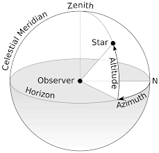
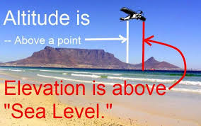
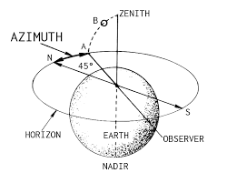
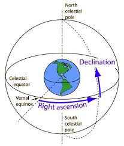
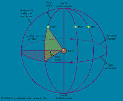

01. Celestial Coordinate Systems
Five common or established Coordinate Systems in use. But in this module we discuss only about three systems.
In astronomy two coordinates describing the position of an object above the Earth. Altitude in this sense is expressed as angular elevation (up to 90°) above the horizon. Azimuth is the number of degrees clockwise from due north (usually) to the object’s vertical circle.
The angle the object makes with the horizon. Objects that seem to touch the horizon have an altitude of 0°, while those straight above you are at 90°.Anything below the horizon has a negative angle, with -90° describing a location straight down. In this and other celestial coordinate systems, the location straight above you is called zenith while the point exactly below you is referred to as nadir.
The object's cardinal direction, such as north, east, south, or west. It is specified as the horizontal angle the object makes with a reference direction, such as true north. Imagine a vertical line connecting the object with the horizon. The azimuth is the angle between the spot where that line crosses the horizon and the reference direction. If true north is used as reference, it is represented by an azimuth of 0°, and angle values increase towards the east. This means, for example, that an azimuth of 180° means due south
The Equatorial Coordinate System uses two measurements, right ascension and declination. Right ascension (abbreviated RA) is similar to longitude and is measured in hours, minutes and seconds eastward along the celestial equator. The distance around the celestial equator is equal to 24 hours. Declination is similar to latitude and is measured in degrees, arcminutes and arcseconds, north or south of the celestial equator. Positive values for declination correspond to positions north of the equator, while negative values refer to positions south of the equator. The declination of the north celestial pole is 90° 0' 0" and the south celestial pole's declination is -90° 0' 0". The equator is 0° 0' 0". The position of an object is stated with the right ascension first, then the declination.
The terrestrial sphere has the coordinates of latitude and longitude, while the celestial sphere uses Greenwich Hour Angle (GHA) and Declination.
